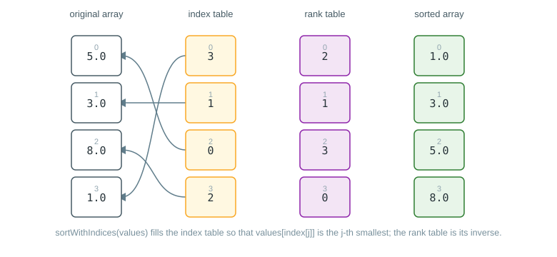

Usage
Sorter<T> is the abstract base class for every algorithm in this library. It sorts arrays of
double, float, int and long primitives, as well as arrays of objects that either implement
Comparable or are ordered through a Comparator.
Create a sorter
A sorter can be instantiated directly (see Straight insertion sort,
Shell sort, Quicksort and Heapsort for
the available implementations), or obtained through the Sorter.create factory methods, which is
convenient when the algorithm is chosen dynamically.
import com.irurueta.sorting.Sorter;
import com.irurueta.sorting.SortingMethod;
// uses Sorter.DEFAULT_SORTING_METHOD (SYSTEM_SORTING_METHOD)
Sorter<Double> defaultSorter = Sorter.create();
// picks a specific algorithm
Sorter<Double> quicksortSorter = Sorter.create(SortingMethod.QUICKSORT_SORTING_METHOD);Sort an array
Primitive arrays are sorted in place and in ascending order. The fromIndex/toIndex overloads
restrict sorting to a sub-range of the array; omitting them sorts the whole array.
Sorter<Double> sorter = Sorter.create();
double[] values = {5.0, 3.0, 8.0, 1.0, 9.0};
sorter.sort(values);
// values is now {1.0, 3.0, 5.0, 8.0, 9.0}
sorter.sort(values, 1, 4);Arrays of objects can be sorted either through Comparable or through an explicit Comparator:
Sorter<String> sorter = Sorter.create();
String[] words = {"banana", "apple", "cherry"};
sorter.sort(words); // uses String's natural (Comparable) order
Integer[] numbers = {5, 3, 8, 1};
sorter.sort(numbers, Comparator.reverseOrder());Sort while tracking original positions
sortWithIndices behaves like sort, but also returns an int[] with the original position of
each sorted element. This makes it possible to reorder other arrays or collections consistently
with the sorted one, without sorting them directly.
Sorter<Double> sorter = Sorter.create();
double[] values = {5.0, 3.0, 8.0, 1.0};
String[] labels = {"five", "three", "eight", "one"};
int[] indices = sorter.sortWithIndices(values);
// values is now {1.0, 3.0, 5.0, 8.0}
// indices is now {3, 1, 0, 2}
String[] sortedLabels = new String[labels.length];
for (int i = 0; i < indices.length; i++) {
sortedLabels[i] = labels[indices[i]];
}
// sortedLabels is now {"one", "three", "five", "eight"}The index table returned above, and its inverse the rank table (the numerical rank of each element
of the original, unsorted array), are illustrated below for this same values array:

Select the k-th smallest element
select returns the k-th smallest element (k starting at 0) without fully sorting the array,
which is faster than sorting when only one or a few order statistics are needed. See
selection and median for details on the algorithm and its side effects on the
input array.
Sorter<Double> sorter = Sorter.create();
double[] values = {5.0, 3.0, 8.0, 1.0, 9.0};
double thirdSmallest = sorter.select(2, values);Compute the median
median selects the middle element (or averages the two middle elements for arrays of even
length). Averaging generic types requires a ComparatorAndAverager, or elements implementing
ComparableAndAverageable; primitive overloads average the values directly.
Sorter<Double> sorter = Sorter.create();
double[] values = {5.0, 3.0, 8.0, 1.0, 9.0, 2.0};
double median = sorter.median(values);Error handling
sort and sortWithIndices for generic types throw SortingException if internal bookkeeping
overflows (see Quicksort); every method throws IllegalArgumentException if
fromIndex is greater than toIndex, and ArrayIndexOutOfBoundsException if fromIndex or
toIndex fall outside the array bounds.